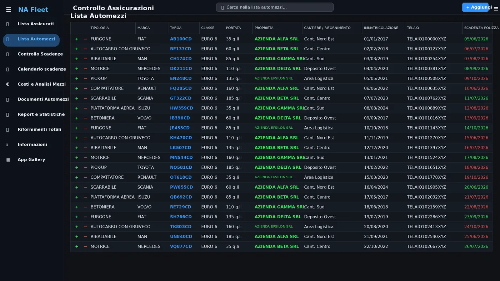
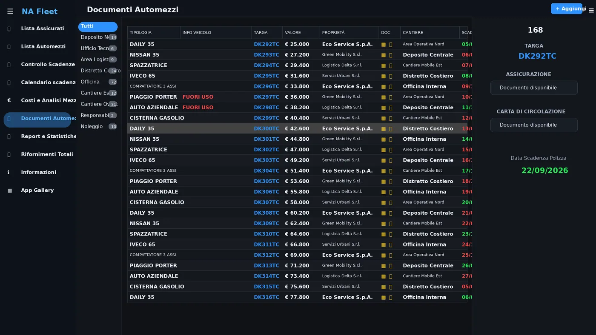
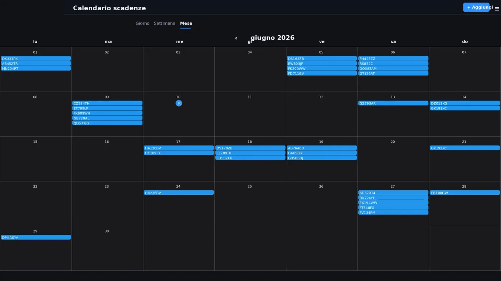

Quando la gestione dei mezzi diventa un rischio operativo
Fogli di calcolo, cartelle separate e promemoria personali rendono difficile controllare assicurazioni, revisioni e documenti. Basta una scadenza dimenticata per creare costi o fermi operativi.
Controllo immediato della flotta
Una dashboard rende visibili mezzi, stato dei documenti e urgenze. Colori e indicatori aiutano a capire subito dove intervenire.


Archivio digitale dei documenti
Ogni veicolo dispone di una scheda con dati, allegati e storico. Le informazioni restano centralizzate e accessibili al personale autorizzato.
Calendario scadenze sempre visibile
La vista mensile rende più semplice programmare rinnovi e controlli, evitando verifiche manuali ripetitive.

Perché digitalizzare la gestione degli automezzi
Archivio centralizzato
Documenti e dati del veicolo in un unico sistema.
Scadenze evidenziate
Indicatori chiari mostrano le urgenze.
Reportistica
Una panoramica immediata dello stato della flotta.
Domande frequenti sulla gestione della flotta
Quali scadenze degli automezzi si possono controllare?
Il gestionale può monitorare assicurazioni, revisioni, bolli, manutenzioni, patenti, tachigrafi e qualsiasi documento con una data di rinnovo configurabile.
È possibile ricevere avvisi prima della scadenza?
Sì. Le notifiche possono essere programmate con più preavvisi e assegnate ai responsabili, così ogni rinnovo viene gestito prima che diventi urgente.
I documenti dei veicoli possono essere archiviati online?
Ogni mezzo può avere una scheda digitale con documenti, allegati, fotografie, dati tecnici e storico delle modifiche, consultabile secondo i permessi assegnati.
Vuoi gestire documenti e scadenze della tua flotta?
Progettiamo una web app adattata ai tuoi mezzi, ruoli e processi reali.
Richiedi una consulenza gratuita